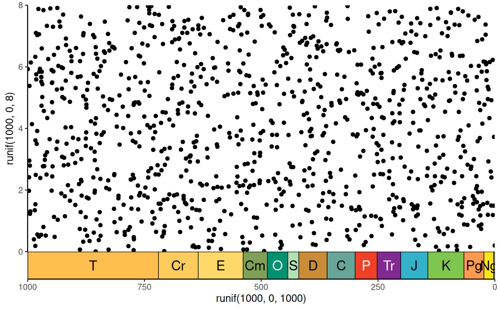
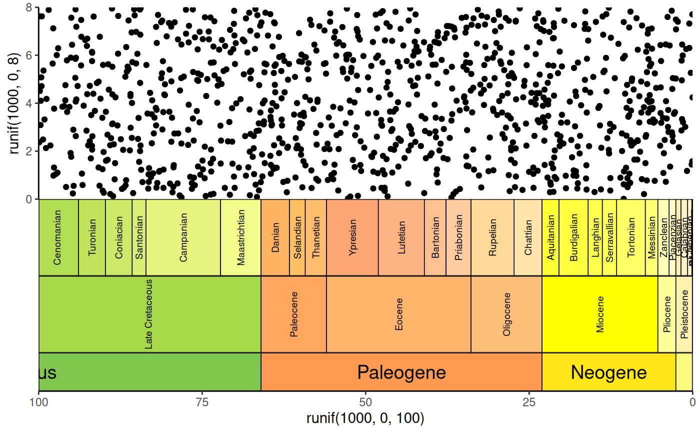

coord_geo behaves similarly to ggplot2::coord_trans() in that it occurs
after statistical transformation and will affect the visual appearance of
geoms. The main difference is that it also adds a geological timescale to the
specified side(s) of the plot.
Usage
coord_geo(
pos = "bottom",
dat = "periods",
xlim = NULL,
ylim = NULL,
xtrans = identity_trans(),
ytrans = identity_trans(),
clip = "on",
expand = FALSE,
fill = NULL,
alpha = 1,
height = unit(2, "line"),
bord = c("left", "right", "top", "bottom"),
lwd = 0.25,
color = "black",
lab = TRUE,
lab_color = NULL,
rot = 0,
family = "sans",
fontface = "plain",
size = 5,
skip = c("Quaternary", "Holocene", "Late Pleistocene"),
abbrv = TRUE,
neg = FALSE,
center_end_labels = FALSE,
dat_is_discrete = FALSE,
fittext_args = list()
)Arguments
- pos
Which side to add the scale to (left, right, top, or bottom). First letter may also be used.
- dat
Either A) a string indicating a built-in dataframe with interval data from the ICS ("periods", "epochs", "stages", "eons", or "eras"), B) a string indicating a timescale from macrostrat (see list here: https://macrostrat.org/api/defs/timescales?all), or C) a custom data.frame of time interval boundaries (see Details).
- xlim, ylim
Limits for the x and y axes.
- xtrans, ytrans
Transformers for the x and y axes. For more information see
ggplot2::coord_trans().- clip
Should drawing be clipped to the extent of the plot panel? A setting of
"on"(the default) means yes, and a setting of"off"means no. In most cases, the default of"on"should not be changed, as settingclip = "off"can cause unexpected results. It allows drawing of data points anywhere on the plot, including in the plot margins. If limits are set viaxlimandylimand some data points fall outside those limits, then those data points may show up in places such as the axes, the legend, the plot title, or the plot margins.- expand
If
FALSE, the default, limits are taken exactly from the data orxlim/ylim. IfTRUE, adds a small expansion factor to the limits to ensure that data and axes don't overlap.- fill
The fill color of the boxes. The default is to use the
colorcolumn included indat. If a custom dataset is provided withdatwithout acolorcolumn and without fill, a greyscale will be used. Custom fill colors can be provided with this option (overriding thecolorcolumn) and will be recycled if/as necessary.- alpha
The transparency of the fill colors.
- height
The height (or width if
posisleftorright) of the scale.- bord
A vector specifying on which sides of the scale to add borders (same options as
pos).- lwd
Line width.
- color
The outline color of the interval boxes.
- lab
Whether to include labels.
- lab_color
The color of the labels. The default is to use the
lab_colorcolumn included indat. If a custom dataset is provided withdatwithout alab_colorcolumn and without fill, all labels will be black. Custom label colors can be provided with this option (overriding thelab_colorcolumn) and will be recycled if/as necessary.- rot
The amount of counter-clockwise rotation to add to the labels (in degrees).
- family
The font family to use for the labels. There are only three fonts that are guaranteed to work everywhere: “sans” (the default), “serif”, or “mono”.
- fontface
The font face to use for the labels. The standard options are "plain" (default), "bold", "italic", and "bold.italic".
- size
Label size. Either a number as you would specify in
ggplot2::geom_text()or"auto"to useggfittext::geom_fit_text().- skip
A vector of interval names indicating which intervals should not be labeled. If
abbrvisTRUE, this can also include interval abbreviations.- abbrv
If including labels, should the labels be abbreviated? If
TRUE, theabbrcolumn will be used for the labels. IfFALSE, thenamecolumn will be used for the labels. If"auto", theabbreviate()function will be used to abbreviate the values in thenamecolumn. Note that the built-in data and data retrieved viaget_scale_data()already have built-in abbreviations. However, using the"auto"option here will create new unique abbreviations based on only the intervals that are being plotted. In many cases, this may result in abbreviations that are shorter in length because there are fewer similar interval names to abbreviate.- neg
Set this to
TRUEif your x-axis is using negative values.- center_end_labels
Should labels be centered within the visible range of intervals at the ends of the axis?
- dat_is_discrete
Are the ages in
datalready converted for a discrete scale?- fittext_args
A list of named arguments to provide to
ggfittext::geom_fit_text(). Only used ifsizeis set to"auto".
Details
Transforming the side with the scale is not currently implemented.
If a custom data.frame is provided (with dat), it should consist of at
least 3 columns of data. See data(periods) for an example.
The
namecolumn lists the names of each time interval. These will be used as labels if no abbreviations are provided.The
max_agecolumn lists the oldest boundary of each time interval.The
min_agecolumn lists the youngest boundary of each time interval.The
abbrcolumn is optional and lists abbreviations that may be used as labels.The
colorcolumn is also optional and lists a color for the background for each time interval.The
lab_colorcolumn is also optional and lists a color for the label for each time interval.
If the axis of the time scale is discrete, max_age and min_age will
automatically be converted to the discrete scale. In this case, the
categories of the discrete axis should match the values in the name column.
If the ages within dat are already discretized, you can set
dat_is_discrete to TRUE to prevent this automatic conversion. This can be
useful for adding a time scale where categories and time intervals are not
1:1.
pos may also be a list of sides (including duplicates) if multiple time
scales should be added to the plot. In this case, dat, fill, alpha,
height, bord, lwd, color, lab, lab_color, rot, family,
fontface, size, skip, abbrv, neg, center_end_labels, and
dat_is_discrete can also be lists. If these lists are not as long as
pos, the elements will be recycled.
If individual values (or vectors) are used for these parameters, they will be
applied to all time scales (and recycled as necessary).
Examples
library(ggplot2)
# single scale on bottom
ggplot() +
geom_point(aes(y = runif(1000, 0, 8), x = runif(1000, 0, 1000))) +
scale_x_reverse() +
coord_geo(xlim = c(1000, 0), ylim = c(0, 8)) +
theme_classic()

# stack multiple scales
ggplot() +
geom_point(aes(y = runif(1000, 0, 8), x = runif(1000, 0, 100))) +
scale_x_reverse() +
coord_geo(
xlim = c(100, 0), ylim = c(0, 8), pos = as.list(rep("bottom", 3)),
dat = list("stages", "epochs", "periods"),
height = list(unit(4, "lines"), unit(4, "lines"), unit(2, "line")),
rot = list(90, 90, 0), size = list(2.5, 2.5, 5), abbrv = FALSE
) +
theme_classic()
